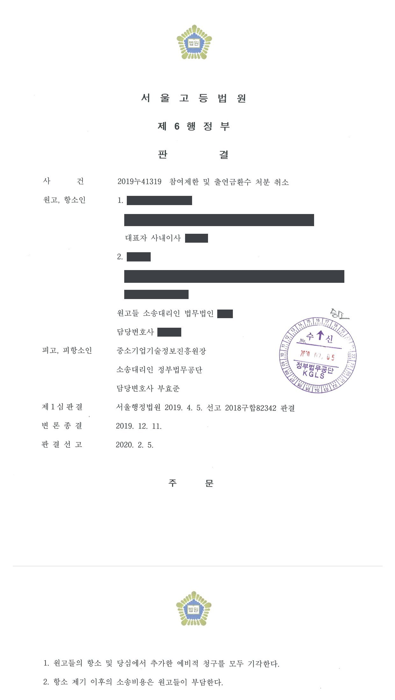
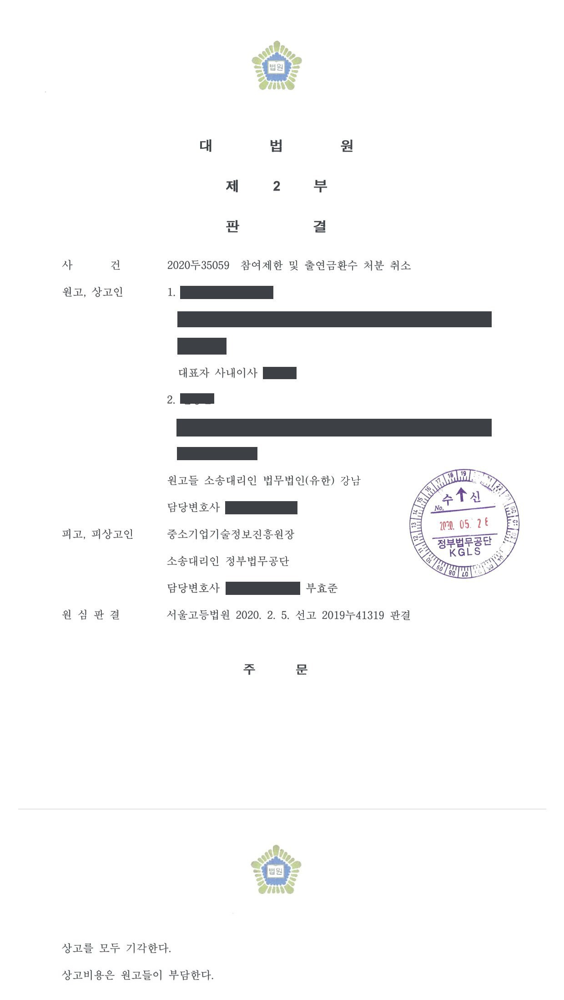

국가연구개발사업 참여제한 및 출연금 환수처분 취소소송 (1·2·3심)
서울행정법원 2018구합82342 · 서울고등법원 2019누41319 · 대법원 2020두35059 · 담당변호사 부효준
판결문



사건의 요지
참여제한·출연금 환수처분에 대하여 전문기관의 이의신청 절차를 거친 뒤 제기된 취소소송에서, 이의신청이 제소기간에 미치는 영향과 소의 적법성이 다투어진 사건입니다. 제1심의 소 각하 판결이 항소심과 상고심에서 그대로 유지되었습니다.
사건의 주요 내용
의료기기 제조업을 하는 원고 회사와 그 대표이사이자 과제책임자인 원고는 2014년 창업성장기술개발사업 건강진단연계 창업과제에 '지방이식용 미세지방 추출 기구 개발 과제'를 신청하여, 2014년 4월 전문기관과 기술개발기간 9개월(뒤에 2015년 3월까지 연장), 정부출연금 1억 7천만 원의 협약을 체결하였습니다. 원고들은 2015년 5월 최종보고서를 제출하였으나 2016년 3월 최종평가에서 금형비용 과다 지출, 의료기기 인증 미진행, 자체평가 위주의 검증 등을 이유로 49.5점 '실패' 판정을 받았고, 이의신청과 성실성 입증보고서 제출을 거쳐 2016년 11월 성실성검증위원회에서도 '실패'로 판정되었습니다.
전문기관은 전문위원회 심의를 거쳐 2017년 9월 '연구개발과정을 불성실하게 수행하여 그 결과가 극히 불량한 경우'에 해당한다는 이유로 원고 회사에 정산금을 제외한 정부출연금 147,965,397원의 환수를, 원고들에게 각 3년의 참여제한을 통보하였습니다(각 처분). 원고들은 2017년 10월 운영요령에 따른 이의신청을 하였는데, 전문기관은 약 11개월이 지난 2018년 9월에야 이의신청 평가위원회 개최를 안내하였고, 2018년 10월 이의신청을 기각하면서 참여제한 기간을 2018년 10월부터 2021년 10월까지로, 납부기한을 2018년 11월로 바꾸어 통보하였습니다(이의신청 기각 통보).
원고들은 기각 통보를 받은 지 23일 만인 2018년 10월 그 통보의 취소를 구하는 소송을 제기하였고, 부효준 변호사는 전문기관을 대리하였습니다. 1심은 2019년 4월 기각 통보가 처분이 아니라는 이유로 소를 각하하였고, 원고들은 항소심에서 2017년 9월의 각 처분 취소를 구하는 예비적 청구를 추가하였습니다. 항소심은 2020년 2월 항소와 예비적 청구를 모두 기각하였고, 원고들의 상고(대법원 2020두35059)도 심리불속행으로 기각되어 그 결론이 유지되었습니다.
쟁점
- 이의신청 기각 통보가 참여제한의 시기·종기와 납부기한을 바꾸었더라도 종전 처분과 별개의 처분이 아닌지
- 운영요령에 따른 이의신청을 한 경우 원처분에 대한 취소소송의 제소기간이 이의신청 기간 동안 정지되는지, 항소심에서 추가한 예비적 청구의 제소기간 준수 여부를 최초 소 제기 시점으로 판단할 수 있는지
- 시작품 제작 명목의 금형비를 양산 수준으로 지출하고, 사업계획서에 없는 의료기관에서 인체 지방을 사용한 실험으로 결과를 검증한 것이 불성실 수행에 해당하는지
원고의 주장
- 이의신청 심사가 1년 가까이 길어진 뒤 기각되면 원고들로서는 처분을 다툴 방법이 없게 되므로, 이의신청 기각 통보를 처분으로 보아 다툴 수 있어야 한다고 주장하였습니다.
- 과제 결과물이 공인시험기관의 무균시험을 통과하였고 자체 조립성 평가와 전문의들과의 공동실험으로 정확도·동작성·편의성을 확인하였으므로 개발목표를 달성하였고, 사업비를 부적정하게 사용하지 않았으며 목표에 미달한 부분은 보완하여 특허를 출원하였고, 인체 지방을 사용한 실험도 결과물 검사를 위한 부득이한 조치였을 뿐 생명윤리법 위반이 아니라고 주장하였습니다.
- 미세지방 추출기의 성능을 객관적으로 확인해 줄 기관이 없었으므로 평가를 '보류'할 수 있었는데도 실패로 판단하였고, 성실하게 수행하였으므로 참여제한 기간과 환수액을 감면할 수 있었는데도 고려하지 않아 재량권을 일탈·남용하였다고 주장하였습니다.
부효준 변호사의 주장
- 이의신청 기각 통보는 이미 이루어진 참여제한·환수처분에 대한 이의신청을 받아들이지 않는다는 사실을 안내하는 통지에 지나지 않고, 종전 처분을 그대로 유지함을 전제로 업무처리의 적정과 원고들의 편의를 위한 조치에 불과하므로 항고소송의 대상이 아니라고 본안전항변을 하였습니다.
- 항소심에서 추가된 예비적 청구에 대하여는, 원고들이 각 처분을 이메일로 송달받은 2017년 9월부터 90일과 1년이 모두 지난 2018년 10월에야 소를 제기하였고 1년을 넘긴 데에 정당한 사유도 없으므로 제소기간이 지나 부적법하다고 항변하였습니다.
법원의 판단
1심과 항소심은 모두 이의신청 기각 통보가 처분이 아니라고 보았습니다. 운영요령 제39조에 따른 이의신청은 처분을 한 전문기관이 스스로 다시 심사하는 절차이고, 참여제한의 시기·종기와 납부시기가 바뀐 것은 이의신청으로 처분의 효력을 일시 정지하고 심사하기 위한 것일 뿐이며, 처분서에 '참여제한 기간은 이의신청 마감일 다음날부터 적용된다'고 안내되어 있어 원고들도 이를 알 수 있었다는 이유입니다. 항소심은 이 이의신청이 행정심판에 해당하지 않으므로 행정심판을 거친 경우의 제소기간 특례(행정소송법 제20조 제1항 단서)도 적용되지 않는다고 덧붙였고, 기각 통보의 취소를 구하는 주위적 청구 부분은 각하되었습니다.
그러나 항소심은 예비적 청구에 대한 제소기간 항변은 받아들이지 않았습니다. 운영요령과 관리지침에 이의신청 처리기한이 없고 처분서에도 이의신청 중 제소기간이 계속 진행된다는 안내가 없었으므로 이의신청 시부터 기각 통보 시까지는 행정소송 제기기간의 진행이 정지된다고 보아야 하고, 당초 소에 각 처분의 취소를 구하는 취지도 포함되어 있으므로 예비적 청구를 추가한 시점이 아니라 최초 소 제기 시점을 기준으로 제소기간을 따져야 한다는 것입니다. 그 결과 처분 통보일부터 이의신청일까지 15일과 기각 통보일부터 소 제기일까지 23일을 합한 38일 만에 소가 제기된 것이 되어 적법하다고 보았습니다.
본안에서는 처분이 적법하다고 판단하였습니다. 시작품 제작용으로 신청한 금형비를 양산 또는 그에 준하는 목적으로 지출하여 지원금을 사실상 영업활동에 사용한 점, 정확도·동작성·편의성을 자체적으로만 검증하고 전문의 몇 명의 구매의향서와 의견서로는 객관성이 확보되지 않은 점, 사업계획서에 없는 의료기관에서 인체 지방을 추출해 실험한 것은 생명윤리법 등 위반 소지가 높아 성실한 수행이라 할 수 없는 점을 들었습니다. 처분 뒤의 특허 출원과 2019년 4월의 의료기기 제조허가는 처분 후의 사정이고 허가 제품도 과제 목표와 달리 원심분리 과정을 거치는 것이어서 고려되지 않았으며, 성과물이 원고들의 소유로 남는 점 등을 들어 재량권 일탈·남용도 부정하여 예비적 청구를 기각하였습니다. 상고심도 심리불속행으로 이 결론을 유지하였습니다.
이와 같은 명시적인 규정을 두고 있지 아니한 경우에도 행정청이 이의신청 절차를 안내하면서 이의신청을 제기하더라도 그 심리에 장기간이 소요될 수 있다는 점과 그 기간 중에도 행정소송 등 제기기간의 진행은 정지되지 아니한다는 점을 안내하지 아니한 이상 적어도 이의신청 제기일로부터 이의신청 결과 통보일까지 행정소송 등 제기기간은 진행되지 않는다고 보지 않는다면, 당사자의 신속한 권리구제를 위하여 마련된 이의신청 절차는 오히려 행정청의 이의신청 절차 지연에 따른 불가쟁력 확보 수단으로 악용될 우려가 있다.
서울고등법원 2019누41319 판결 이유 '3. 예비적 청구에 관한 판단 — 가. 2) 이의신청절차와 행정소송 등 제기기간 — 가) 이의신청 절차의 의의' 부분
특히 피고는 이 사건 이의신청 기각 통보서에 참여 제한 기간의 시기와 종기, 환수금의 납부기한을 종전의 이 사건 각 처분과 다르게 기재하였다. 이처럼 이 사건 이의신청 기각 통보는 이 사건 각 처분의 효력을 잠정적으로 중단하였다가, 그 기각결정으로써 중단된 효력을 그 결정일 이후부터 다시 회복시킨다. 행정소송법 제20조 제1항이 제소기간의 기산점으로 규정한 '처분 등이 있음'은 그 처분의 효력 발생을 전제한다(대법원 2019. 8. 9. 선고 2019두38656 판결 참조). 이 사건 각 처분은 이 사건 이의신청 기각 통보 전까지는 단순히 성립하여 존재하고만 있을 뿐, 원고들에게 곧바로 효력이 발생하였다고 보기 어렵다.
서울고등법원 2019누41319 판결 이유 '3. 가. 2) 라) 이의신청 결과로써 최종적으로 확정되는 처분의 내용과 범위' 부분
원고들은 이 사건 사업계획서에서 언급하지 않은 전문의 또는 의료기관에서 지방추출기를 사용하여 인체적출물인 지방을 추출하고 이를 분석에 사용하였다. 이는 생명윤리법 등 관계 법령의 위반행위일 소지가 높다. 과제 목표 달성을 위해 관계 법령 위반 여부 등의 철저한 검토 없이 이루어진 경우 성실한 연구개발의 수행이라고 할 수 없고, 그렇게 확보된 결과물을 신뢰하기 어렵다. 이는 관계 법령 위반 여부가 이 사건 평가지표에 포함되지 않았다 하여 달리 볼 것은 아니다.
서울고등법원 2019누41319 판결 이유 '3. 나. 4) 처분사유의 존부에 관한 판단 — 다)' 부분
※ 판결 이유 가운데 이 사건의 판단 기준이 된 부분을 그대로 옮긴 것으로, 당사자 이름 등은 가렸습니다.
이 사건이 보여 주는 것
이 사건 항소심은 전문기관의 이의신청 절차가 처리기한 없이 11개월 가까이 지연된 사정을 들어, 이의신청을 한 때부터 기각 통보를 받을 때까지는 원처분에 대한 제소기간이 진행하지 않는다고 보았습니다. 처분서에 이의신청의 지연 가능성과 제소기간이 계속 진행된다는 점이 안내되지 않은 경우에 관한 판단입니다. 다만 1심은 이와 달리 이의신청 중에도 제소기간이 진행된다고 보았으므로, 처분을 받은 쪽에서는 원처분을 기준으로 90일 안에 소를 제기하는 것이 여전히 안전합니다.
본안에서는 사업비 사용 목적과 실험 방법의 적법성이 '성실 수행' 판단에 포함되었습니다. 시작품 제작비로 신청한 금형비를 양산 수준으로 지출하면 지원금을 영업활동에 쓴 것으로 평가되고, 사업계획서에 없는 의료기관에서 인체 유래물을 쓴 실험은 평가지표에 없더라도 관계 법령 위반 소지가 있어 성실 수행으로 인정되지 않습니다. 처분 뒤에 받은 특허 출원이나 의료기기 허가도 평가를 뒤집지 못하므로, 객관적 검증과 인증 절차는 협약기간 안에 마쳐야 합니다.
관련 법령중소기업 기술혁신 촉진법 제31조 제1항 제1호·단서, 제32조 제1항·단서 · 중소기업 기술혁신 촉진법 시행령 제21조, 별표 2 · 중소기업기술개발 지원사업 운영요령 제24조, 제25조, 제27조 제1항, 제30조, 별표 3, 제39조(이의신청) · 행정소송법 제20조 제1항 · 행정심판법 제4조, 제27조 · 생명윤리 및 안전에 관한 법률
관련 단어참여제한 3년출연금 환수이의신청 기각 통보처분성 부정제소기간 정지이의신청 중 제소기간예비적 청구 추가창업성장기술개발사업의료기기 개발 과제금형비 양산 목적 지출생명윤리법심리불속행
비슷한 처분을 받으셨다면
국가연구개발 제재처분은 사전통지를 받은 날부터 20일 이내에 재검토 요청 의견을 내고, 처분이 있음을 안 날부터 90일 이내에 취소소송을 제기해야 합니다. 처분서나 사전통지서를 받은 날짜부터 확인해 드립니다.